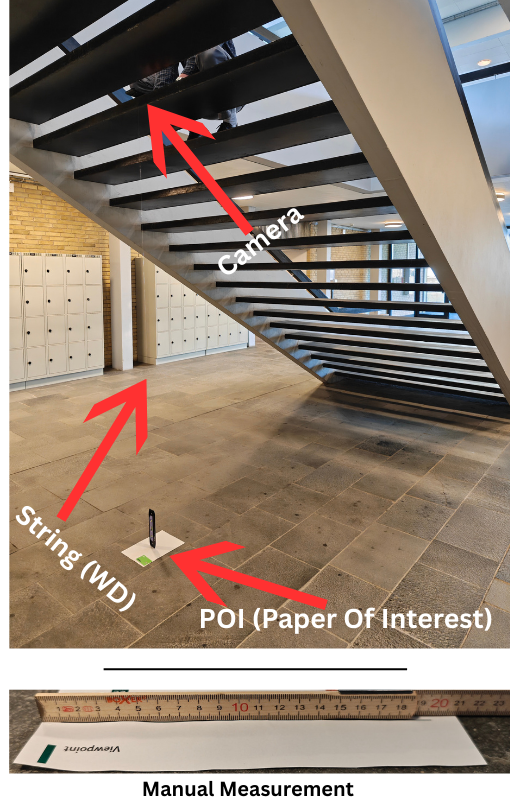
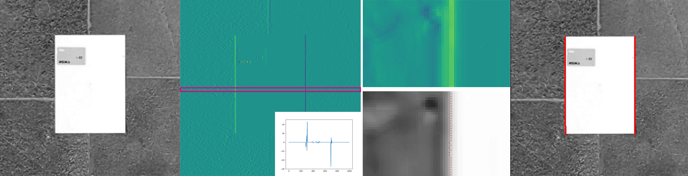
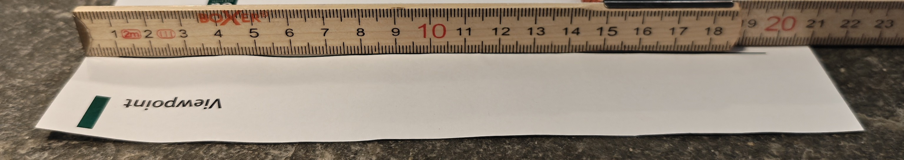

Latest Page Update: 05-03-2026
Solution is now available! Download the full solution from here: Solution
Exercise2 - Cameras and Lenses¶
Part 1 - Warming up¶
We'll start by doing some basic geometric operations to get you up to speed.
Exercise 1¶
Explain how to calculate the angle \(\theta\) when \(a\) and \(b\) is given
in the figure below. Calculate \(\theta\) (in degrees) when
\(a = 10\) and \(b=3\) using the function math.atan2(). Remember to import math and find out what atan2 does.
{kind=link}
Solution 1
Exercise 2¶
Create a Python function called camera_b_distance.
object distance \(g\). It should return the distance from the lens to The function should accept two arguments, a focal length \(f\) and an where the rays are focused (\(b\)) (where the CCD should be placed)
The function should start like this:
def camera_b_distance(f, g):
"""
camera_b_distance returns the distance (b) where the CCD should be placed
when the object distance (g) and the focal length (f) are given
:param f: Focal length
:param g: Object distance
:return: b, the distance where the CCD should be placed
"""
It should be based on Gauss' lens equation:
You should decide if your function should calculate distances in mm or in meters, but remember to be consistent!
Use your function to find out where the CCD should be placed when the focal length is 15 mm and the object distance is 0.1, 1, 5, and 15 meters.
What happens to the place of the CCD when the object distance is increased?
Solution 2
def camera_b_distance(f, g):
"""
camera_b_distance returns the distance (b) where the CCD should be placed
when the object distance (g) and the focal length (f) are given
:param f: Focal length
:param g: Object distance
:return: b, the distance where the CCD should be placed
"""
b = 1 / (f**(-1) - g**-(1))
return b
Part 2: Two amateur metrologists and an experiment in subpixel precision¶
Two engineers are about to release a scientific paper that they've been working night-and-day on. They deem this their life's work and want to do everything to increase their chances of getting their article accepted at a large publication. They therefore want to be extra meticulous about all aspects of their project, all the way down to the size of their A4 paper sheets, which need to be standardized to their liking before handing them in.
During production, A4 paper is designed to have a tolerance of \(\pm 2\text{mm}\) for both height and width, which obstrues their plan of making a perfectly symmetrical paperstack.
Luckily, they're also amateur metrologists that know a little about quality control measurements! The amateur metrologists therefore set themselves the task, of measuring the physical dimensions of a piece of paper. They don't possess any professional equipment, yet they're determined to make it work using a low-quality homemade experimental setup.
As capture device, they use the low-quality CCD cameras from one of the metrologists' Google Pixel 7 smartphone, and mount it on a stair-case face-down. They then place the A4 paper on the ground floor directly beneath the camera. They make sure that the optical axis of the CCD camera is exactly aligned with the centre of the piece of paper.
To measure the distance from the camera to the paper, they attach a string onto the front lens element of the camera, measuring that the camera is located \(2.9968m\) above the paper (i.e. \(\text{WD}\approx2.9968 m\)).
Searching on Google, they find that the height and width of a typical A4 paper is \(h=290mm\) and \(w=210mm\) respectively. As they also need some camera specifications, they search and encounter a table with the following specifications:
Camera specifications
Imaging lens:
- Image resolution: \(8160\times6144\)
- 82˚ field of view (wide)
Video lens:
- Resolution from video: \(3840\times 2160\) pixels
Global values:
- 50 MP sensor
- 24mm equivalent f/1.85-aperture - physical focal length ~ 6.8mm
- Pixel side length: 1.2 µm (also called pixel pitch)
- Complete sensor size: \(9.782\text{mm}\times 7.3728\text{mm} (12.26\text{mm} \text{ diagonal})\)
Initially, the amateur metrologists start out with a single image of the scene. They try to verify whether they can utilize the thin-lens theory, camera parameters and the object distance to measure the dimensions of the piece of paper correctly.
{kind=link}

Preparation
It is easiest to start by drawing the scene and the thin lens equation. The scene should contain the optical axis, the optical center, the lens, the focal point, the CCD chip, the paper, and the variables for the thin lens equation.
Units
In the following exercise, you should remember to explain when something is in mm and when it is in meters. To convert between radians and degrees you can use:
Excercise 3:¶
A focused image of the paper is formed inside the camera. One of the metrologists measures the full image height of the paper in a frame to be 385 pixels. What is the equivalent height of the image in mm?
Solution 3
Exercise 4¶
At which distance to the lens is the image formed? Look at this again, result inconsistencies found.
Solution 4
Inspecting the specifications table again, there are some missing values that the metrologists may need in order to create correct measurements using a video, which were unattainable online. Given the information they currently have, they realize that they can compute these values themselves.
Exercise 5¶
Consider if the metrologists instead captured a video. What is the effective physical size of the active image region for their video?
Hint
Consider the video resolution. Can we compute a physical value instead?
Solution 5
Exercise 6¶
What is the effective horizontal FOV in a video? Provide the measurement in degrees.
Solution 6
Hint
Lookup MIA chapter 2, figure 2.10.
Exercise 7¶
What is the effective vertical field of view in a video? Likewise, in degrees.
Solution 7
During experimentation, the metrologists become increasingly uncertain about the accuracy of their current approach. In order to verify this assumption, they scour the internet to identify a highly standardized object, which can be used as a reference for result evaluation.
From scouring the internet, the metroologists learn that the size of a credit card is highly standardized with shape \(85.60\times 53.98\text{ mm}\).
Exercise 8¶
Assume that they exchange the paper with a credit card. How tall in pixels will the credit card be on the sensor, still assuming it is perfectly centered in the optical axis?
Solution 8
First calculate the image distance using the thin lens formula:
And now use this quantity to calculate the height from Eq. 2.3:
Finally, relate this to the number of pixels using the side-length of a pixel:
Exercise 9¶
What physical distance in the object plane does a single pixel correspond to in this exact case?
Solution 9
We have the equation
so the following computation yields the pixel dimension:
And in general for the setting where \(g\gg f\), we may additionally use \(b\approx f\). The approximation \(b\approx f\) holds because the working distance is much larger than the focal length. In this regime, the thin-lens camera behaves like a pinhole camera with an effective focal length. This is why calibration procedures estimate camera parameters directly in pixel units rather than attempting to recover physical lens properties.
The result means that the camera setup from a single frame, disregarding noise and optic errors, is able to measure distances on a half millimeter scale.
To determine whether their assumption holds, the two amateur metrologists gather data with a credit card within the image frame, and try to measure its height and width in pixels. A cropped frame from the resulting image looks as presented in the Figure below:
{kind=link}
To measure the height and width, they load a single image frame from the experiment using matplotlib:
import matplotlib.pyplot as plt
from skimage.io import imread
im = imread("data/images/with_calib/crops/0.png")
plt.imshow(im, cmap="gray")
plt.show()
and inspect how tall and wide the credit card is using the cursor.
Exercise 10¶
What is the width and height of the credit card approximately measured in pixels? Does it fit with the theoretical calculations? If not, can you explain the reason for the found discrepencies?
Solution 10
Measuring yields a width which is approximately:
and a height:
Which is quite close to the calculated theoretical value. Discrepancies may be caused by imprecise focal length, imprecised measured object distance and a slight rotation with respect to the sensor axes. In addition, the card is not in the optical center, which our calculations assume. This is the exact reason why machine vision setups seldom rely on theoretical calculations, but rather use calibration, as you will see in later exercises.
Coordinate frames and triangulation¶
Exercise 11¶
Continue assuming that the credit card is perfectly centered in the optical centre, and the camera is perfectly orthogonally oriented towards the scene. Express the camera-vectors of the top-centre, bottom-centre, left-centre and right-centre of the credit card in the camera-coordinate system when assuming that the object is perfectly planar. You should denote the 3D representation for each vector.
Solution 11
the camera vectors are:
which in this case yields:
Exercise 12¶
Now calculate the corresponding physical coordinates on the image sensor in the format \(x,y,z\) using the triangulation approximation in Eq. 1 of the triangulation note.
Solution 12
We have \(z=f=6.8\cdot 10^{-3}m\). We may use the similarity of triangles to calculate:
for each point. This yields:
Exercise 13¶
What is the corresponding height and width of the card on the sensor when using the triangulation?
Solution 13
First, calculate the physical width and height on the sensor:
and divide each by the pixel pitch:
Exercise 14¶
Relate the found values to the ones found in exercise 8. Are they similar? If you find a small difference, do you have an idea where it originates from?
Solution 14
The difference arises because Exercise 8 uses the full thin-lens equation, whereas Exercises 11–13 use a pinhole (triangulation) approximation in which the image distance is assumed to be equal to the focal length. Since the working distance is large compared to the focal length (\(g>gg f\)), the relative error introduced by this approximation is very small, but still present. If we used \(b\) instead of \(f\) for the imaging distance, we would recover exactly the same values.
Exercise 15 (optional)¶
Try and recompute the results from exercise 8 but using \(b=f\). Try to relate your results to exercise 14.
Solution 15
Now the two results are equivalent. This is because it is the same projective geometry; in essence, it is the same math, but written in two different coordinate frames. In 8 we compute the dimensions using lens-equations, i.e. we use a thin-lens model, whereas we in 11-13 use a pinhole camera. The thin-lens equation simply determines the image distance \(b\), while triangulation describes how 3D points map to the image plane once \(b\) is known.
Although the thin-lens model is physically more detailed, it is rarely used in the machine vision industry because the image distance \(b\) cannot be recovered from images alone. This is due to the fact that \(b\) is fundamentally entangled with the unknown (or variable) object distance. As a result, \(b\) is not an observable quantity in projective imaging.
Computer vision therefore uses a pinhole model in which all internal camera geometry is absorbed into an effective focal length measured directly in pixel units. This directly translates to saying that lens thickness and internal structure are irrelevant for projective geometry, once the image is in focus and the working distance is large.
Demonstrating sub-pixel precision¶
The results found in exercise 10 exposed, that the metrologists cannot rely on the theoretically expected conversions using the thin-lens theory. As they only have a single camera they cannot triangulate their way out of their difficulties. They therefore decide to use a calibration rod to infer the physical pixel size in the object plane.
Having already gained familiarity with the fixed specifications of a credit card (\(53.98\text{mm}\times 86.50\text{mm}\)), they decide to use this for calibration. The card is placed on top of the piece of paper.
The metrologists have recently become aware of a method known as Sub-Pixel Accuracy, which will stabilize measurements by integrating results over time. Using this approach, they can become more confident about their paper dimensions and enable them to filter congruent ones!
To account for temporality, they record a video and analyze the video feed.
Recording is made for approximately a minute, holding the camera as still as possible. The video is recorded at 24 fps, and in total they obtain 1466 frames. For each video frame, they:
- Crop the video
- Convert it to grayscale
- Save it as a .png file
Then, for each frame, the metrologists carry out steps which you will learn later in this course. Their procedure is as follows:
- Calculate the intensity gradient along the x-dimension
- Per row of the intensity gradient, find the minimum and maximum peaks which are the paper boundaries
- Using the gradient values in the neighbourhood around the peak coordinate, compute the centroid coordinate
- Filter the coordinates to remove misdetections
- Make a regression on the remaining points. This gives a function for the left and right edge
- From one edge, compute the orthogonal distance to the function describing the other edge
The complete process is outlined in the following Figure:

{kind=link}
The metrologists have saved all data extracted from the pipeline in the folder data/measurements/lstsq/ as .csv files. In each file, the recorded average value of the quantity of interest is saved per frame.
The recorded values are expressed in \(\text{pixels}\).
Exercise 16¶
Load the widths and height measurements for the credit card and the piece of paper.
Coding tip:
You can use np.loadtxt(<path_to_your_file>,delimiter=",") to read a .csv file.
Solution 16
import numpy as np
def load_measurements(path, method="simple"):
print(f"{path}/{method}/card_heights.csv")
card_w = np.loadtxt(f"{path}/{method}/card_widths.csv",delimiter=",")
paper_w = np.loadtxt(f"{path}/{method}/paper_widths.csv",delimiter=",")
filenames = np.loadtxt(f"{path}/{method}/filenames.csv",delimiter=",",dtype=str)
return {"card_w":card_w,"paper_w":paper_w, "filenames": filenames}
in_dir = f"data/measurements/"
METHOD="lstsq"
measurements = load_measurements(in_dir,METHOD)
np. set_printoptions(precision=6)
print(f"Example data of card widths: {measurements["card_w"]}")
Exercise 17¶
Compute the physical resolution of a pixel in \(\frac{\text{mm}}{\text{pixel}}\) using the known size of the credit card. Do this in the x and y directions.
Tip:
We want the calibration element to be as precise and stable as possible. Therefore, we calculate the mean over it before the division. An underlying assumption here is that the camera lies still relatively to the paper: else a per-frame calibration should be used instead.
Solution 17
To simplify, the following exercises only deal with width observations. They are however fully generalizable to height measurements, which you may test out yourself.
Exercise 18¶
Make a loop and calculate statistics as a function of the number of samples used in the estimation of the paper dimensions.
In the loop you should:
- Estimate the mean width of the paper in pixels, using all samples up to n.
- Convert the mean to physical units using the earlier found calibration factor
- Save the standard-deviation of the individual measurements, using e.g.
width_std = width_slice.std(ddof=1) - Compute the standard error of the mean using \(SE=\frac{\sigma}{\sqrt{N}}\).
- Save everything to a list so we can plot them later.
ddof=1:
We must use ddof=1 because it is the standard deviation of a sample!
You can use the following as inspiration:
Code template:
Ns = np.arange(10, len(widths), 10) # More points for smoother curve
# Calculate metrics correctly
width_means = []
width_sem = [] # Standard error of the mean
width_std_of_sample = [] # Sample standard deviation
for n in Ns:
width_slice = widths[:n]
... your code to compute quantities here ...
... your code to append computed quantities to the lists ...
Solution 18
widths = measurements["paper_w"]
window_size = 10
J = 1
Ns = np.arange(window_size, len(widths), J) # More points for smoother curve
# Calculate metrics correctly
width_means = []
width_moving_avg = [] # Moving average of mean, using <window_size> samples
width_sem = [] # Standard error of the mean
width_std_of_sample = [] # Sample standard deviation
for n in Ns:
# Average pixel measurements
width_slice = widths[:n]
paper_width_pixels = widths[n]
moving_avg = widths[n-window_size:n].mean()
# mean_paper_width_pixels = widths[:n].mean()
# Apply calibration
width_means.append(paper_width_pixels * mm_per_pixel_w)
width_moving_avg.append(moving_avg * mm_per_pixel_w)
width_std = (width_slice*mm_per_pixel_w).std(ddof=1) #ddof=1 because sample std
width_std_of_sample.append(width_std)
# Standard error of the mean = std / sqrt(n)
width_sem.append(width_std / np.sqrt(n))
Having produced statistics over the video feed, the metrologists can now make evidence-informed estimations about their paper dimensions. They then conduct a visual analysis to assess the reliability of their video feed.
Exercise 19¶
Demonstrate the scaling law derived for the temporal averaging procedure in the note. The most straight-forward way is visualization. All plots should be a function of the number of samples used in the estimate. Produce the following four plots:
- The sample standard-error \(\frac{\sigma(\tilde{W})}{\sqrt{N}}\) of the mean as a function of the number of samples,
- plot 1 in a log-log plot,
- A plot of the standard-deviation of the sample as a function of the number of samples,
- A plot of the recorded sample width over time.
Plots 1-3 should be a function of the number of samples used in the estimate. We are mostly interested in the standard-deviation \(\sigma(\tilde{W})\), and the mean values \(\tilde{W}\), as they are able to tell us about the convergence properties.
The timeseries in plot 4 does however give us some interesting insights wrt. the underlying noise pattern in the video.
Visualization Tip
To visualize the four plots, you should use plt.subplots() for a better visual overview (documentation).
Solution 19
import matplotlib.pyplot as plt
# Create plots
fig, axes = plt.subplots(2, 2, figsize=(12, 10))
# Top left: Standard error of the mean vs N (should decrease as 1/√N)
axes[0, 0].plot(Ns, width_sem, 'b-', marker='o', markersize=3, label='Width SEM')
axes[0, 0].set_xlabel('Number of samples (N)')
axes[0, 0].set_ylabel('Standard Error of Mean (mm)')
axes[0, 0].set_title('Standard Error vs N')
axes[0, 0].legend()
axes[0, 0].grid(True)
# Top right: Log-log plot of SEM (should have slope -0.5)
axes[0, 1].loglog(Ns, width_sem, 'b-', marker='o', markersize=3, label='Width SEM')
# Theoretical 1/√N line
theoretical = width_sem[0] * np.sqrt(Ns[0]) / np.sqrt(Ns)
axes[0, 1].loglog(Ns, theoretical, 'k--', linewidth=2, label='1/√N reference')
axes[0, 1].set_xlabel('Number of samples (N)')
axes[0, 1].set_ylabel('Standard Error (mm)')
axes[0, 1].set_title('SEM vs N (log-log, slope = -0.5)')
axes[0, 1].legend()
axes[0, 1].grid(True, which='both', alpha=0.3)
# Bottom left: Sample std (should be roughly constant)
axes[1, 0].plot(Ns, width_std_of_sample, 'b-', marker='o', markersize=3, label='Width std')
axes[1, 0].set_xlabel('Number of samples (N)')
axes[1, 0].set_ylabel('Sample Std Dev (mm)')
axes[1, 0].set_title('Sample Std Dev vs N')
axes[1, 0].legend()
axes[1, 0].grid(True)
# Bottom right: Mean convergence
# axes[1, 1].plot(Ns, width_means, 'b-', marker='o', markersize=3, label='Width mean')
#add 95% confint
z_score = 1.96
# Convert lists to numpy arrays for vector math
w_means_arr = np.array(width_means)
w_mov_avg_arr = np.array(width_moving_avg)
w_sem_arr = np.array(width_sem)
# Width Plot
axes[1, 1].plot(Ns, w_means_arr, 'b', marker='o', markersize=3, label='Width')
axes[1, 1].plot(Ns, w_mov_avg_arr, 'r-', label=f'Width moving average (window_size={window_size})')
# Shade the 95% Confidence Interval (± 1.96 * SEM)
axes[1, 1].fill_between(Ns,
w_means_arr - z_score * w_sem_arr,
w_means_arr + z_score * w_sem_arr,
color='b', alpha=0.15, label='95% CI')
axes[1, 1].set_xlabel('Sample')
axes[1, 1].set_ylabel('Width estimate (mm)')
axes[1, 1].set_title('Width over time')
axes[1,1].ticklabel_format(useOffset=False)
axes[1, 1].legend()
axes[1, 1].grid(True)
for ax in axes.flatten():
ax.set_xlim([Ns[0],Ns[-1]])
plt.tight_layout()
plt.show()
# Summary
print(f"\nIndividual measurement noise:")
w_phys = widths * mm_per_pixel_w
print(f"Final width estimate: {w_phys.mean():.3f} ± {w_phys.std(ddof=1)/np.sqrt(len(w_phys)):.3f} mm")
Exercise 20¶
Comment on all of the plots, thinking about the following questions:
- How should they ideally look?
Hint
This can be derived from the width-over-time plot when using all \(N\) samples. Take into account that A4 paper is produced with tolerances \(\pm 2\text{mm}\) in width.
- Does the estimator have bias?
- Is there an argument to be made that taking a longer video would allow a better estimator?
Solution 20
- The standard error should in all cases decrease as \(N\) increases. More specifically, when making a log-log plot, the slope should be -0.5 as we expect \(\sigma(\tilde{X})\propto\frac{1}{\sqrt{N}}\). If this were not observed, some of the underlying assumptions are violated, and we can not necessarily rely on temporal averaging to improve precision.
- The sample standard deviation should stabilize more and more as \(N\) increases. It is a measure of our confidence in the estimator; if it does not converge, the underlying estimation procedure is not very robust or strong outliers are present, which directly will yield slower convergence of the estimator; as a result, more samples are to be collected or the imaging/estimation pipeline is to be re-done.
- The means should converge towards somewhere within the tolerance band of the paper dimensions, i.e. \(210 \pm 2\text{mm}\) unless the paper is wrongly manufractured. If the measurements converge towards other values, there is bias present in the estimation. If the means do not converge, this could indicate drift, which could be caused by an unstable setup.
- Taking a longer video will make our estimate have a lower and lower standard error (high precision), but it will not be accurate if systematic bias present or there is drift
Exercise 21¶
Inspect the width-over-time plot in greater detail. Can you relate the sequence to the environment noise? How would you effectively mitigate the observed issues?
Optional: For those who have more experience with timeseries, we recommend you run the following code snippet over your width-over-time entries:
To run the code, you first need to install the Python package: statsmodels.
What does this tell you about the noise?
Solution 21
The assumed width-over-time plot indicates, that there is some correlated noise present. This is particularly evident from the moving average (red line), which seems to indicate some form of trend in the data. Only using visual inspection, it is therefore highly likely that the scene environment produces unforeseen measurement fluctuations, making it necessary to integrate this contribution out.
Can we form further conclusive evidence for this? We can start by running the following code:
This figure gives conclusive evidence, that noise is correlated (lines, or "lags", after 0 would lie within the blue confidence band otherwise).Inspecting the figure, there may be evidence to suggest that the noise is periodic. If so, this is likely produced by flickering from ambient lighting. This is however not conclusive. The likely cause of noise is either:
- Ambient lighting,
- Noise produced internally within camera (heat accumulation, inherent exposure adjustments produced by smartphone frame processing, etc.)
With the latter more likely.
To mitigate the noise, a suggestion could be to employ a very bright light source together with an industrial camera, which would decrease the effect of both.
Having made the analysis, they become increasingly confident that their approach is correct. From the literature on Sub-Pixel Accuracy, they can now compute the mean over their observations to make a reliable size prediction.
To beware hubris, they manually measure the piece of paper. This will inevitably be a noisy measurement, e.g. due to the observer's ability to produce a vertical/horizontal measurement without tilt, yet acts as a good baseline for validating their own measurement.
{kind=link}

Exercise 22¶
Compute and print the sub-pixel mean value over all width measurements and compare it to the manually inspected baseline. Can we trust our computed mean?
Solution 22
w_phys = measurements["paper_w"].mean()*mm_per_pixel_w
print(f"Estimated width of paper: {w_phys:.4f}")
Exercise 23¶
Considering the results, which one of the following approaches is a natural next step for the metrologists?
- Changing the experimental procedure (making a less amateuristic setup, use a better camera, use consistent illumination, etc.).
- Taking a longer video using the same setup.
- Improve the algorithmic procedure.
Solution 23
Changing the experimental procedure. Without a proper machine vision configuration, there is bound to be some noise, which could be detrimental for certain tasks.
Taking a longer video isn't detrimental
Exercise 24¶
Are you impressed by the final result, considering the amateuristic setup?
Summary
This week we explored the possibilities of making quality control procedures using a non-standard setup. This demonstrated the difficulty of producing such solutions in industry, where the task is much less trivial than our assumed setup, where practicioners need to account for elements such as pose and distance shifts as well as scene movement.
Exam preparation¶
Below are three example exam exercises related to this weeks material. Work with them, and if you have issues or questions, please ask the TAs, as you will not be able to get help after the last exercise round.
Exam question 1: A company is making an automated system for fish inspection. They are using a camera with a CCD chip that measures 5.4 x 4.2 mm and that has a focal length of 10 mm. The camera takes photos that have dimensions 6480 x 5040 pixels and the camera is placed 110 cm from the fish, where a sharp image can be acquired of the fish. How many pixels wide is a fish that has a length of 40 cm?
- 4364
- 4135
- 3213
- 5612
- 1872
- Do not know
Solution 24
- 4364
- 4135
- 3213
- 5612
- 1872
- Do not know
Exam question 2: You have a camera with a focal length of 52 mm and a CCD chip of 8 mm x 6 mm. The image dimensions are 3200 x 2400 pixels. It can be assumed that b = f. From a distance of 10 cm you have taken a sharp picture of an eye with a completely round pupil. The image is thresholded such that only the pupil is visible. You find the area of the pupil to be 416248 pixels. What is the real diameter of the pupil given in millimeters?
- 4.2 millimeter
- 3.5 millimeter
- 2.9 millimeter
- 3.8 millimeter
- 4.4 millimeter
- Do not know
Solution 25
- 4.2 millimeter
- 3.5 millimeter
- 2.9 millimeter
- 3.8 millimeter
- 4.4 millimeter
- Do not know
Exam question 3: You have a camera with a field-of-view of 35◦ both horizontally and vertically. The cameras focal length is 20 mm and it can be assumed that f = b. What should the height of the CCD chip be, in order to take an image of the whole field-of-view?
- 8.2 mm
- 9.8 mm
- 13.7 mm
- 10.1 mm
- 12.6 mm
- Do not know
Solution 26
- 8.2 mm
- 9.8 mm
- 13.7 mm
- 10.1 mm
- 12.6 mm
- Do not know